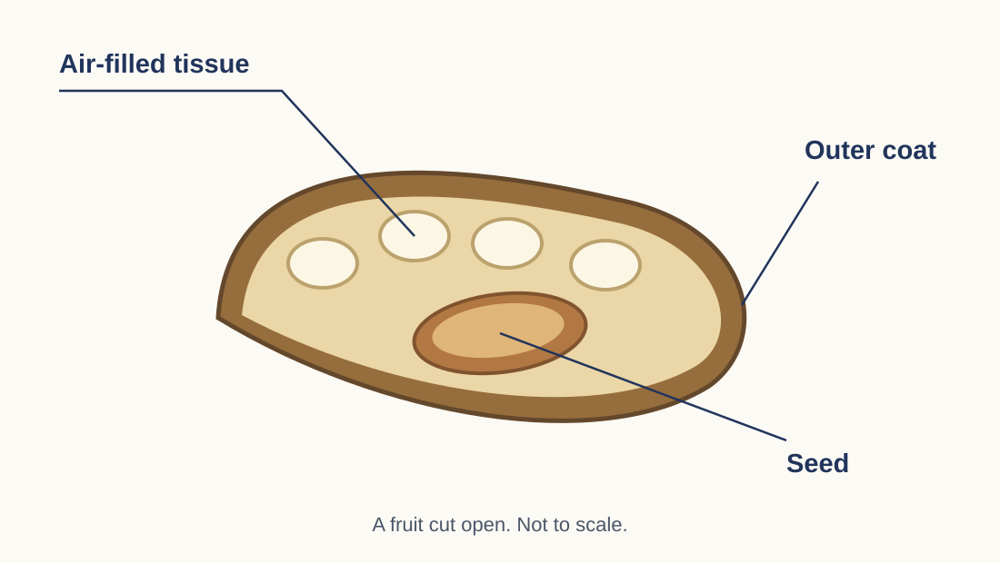

How might this new fruit travel?
Work alone. Use the diagram and your own understanding.

How could this fruit travel? Use a feature in the diagram to explain your answer.
Why might its seed fail to grow into a healthy plant there? Explain your answer. [4]